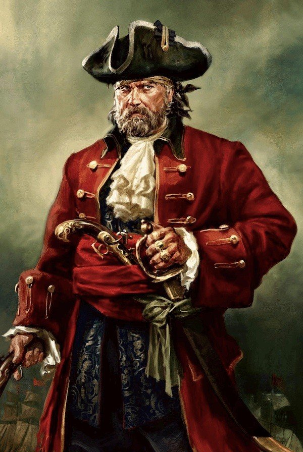

Long Ben
Henry Every o Henry Avery (Devon, c. 1659 - desaparecido en 1699) fue un pirata inglés activo en el siglo XVII, también conocido como Avary John, Ben Long y Benjamin Bridgeman. Es más famoso por ser aparentemente uno de los pocos grandes capitanes piratas en retirarse con su botín sin ser arrestado o muerto en batalla. Era un genio del engaño. Apodado "El rey de los piratas" por sus contemporáneos, fue en su momento el bucanero más buscado del mundo.